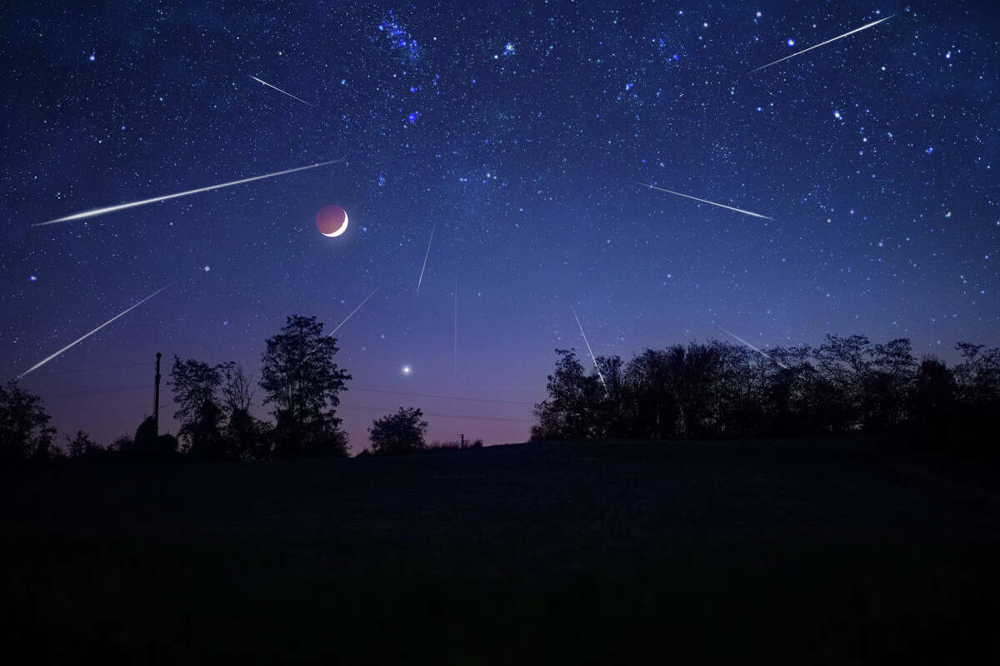

Les pluies de météores ou pluies d'étoiles filantes ont lieu lorsque la Terre traverse un essaim de poussières souvent laissé par des comètes. Attirées par la gravité terrestre, elles entrent dans l'atmosphère et cela provoque de nombreuses météorites ou météores (appelés aussi bolides). Cette traînée lumineuse est causée par la vaporisation du corps et l'ionisation de l'air sur sa trajectoire, phénomènes dus principalement à la compression de l'atmosphère en avant du corps supersonique (et non à la friction). Cette incandescence se produit entre 120 et 60 km d'altitude (avec une vitesse entre 40 000 et 290 000 km/h) : les étoiles filantes. Quelques grammes suffisent à avoir des éclat égaux à ceux des étoiles. Elles semblent toutes provenir d'un seul point appelé radiant. Les pluies de météores ont le nom de la constellation contenant leur radiant. On peut observer à l'œil nu plus de 9 milliards de météores par an. Ce qui est peu en comparaison de ce qui frappait la Terre au moment de la naissance du système solaire. ► En savoir plus
